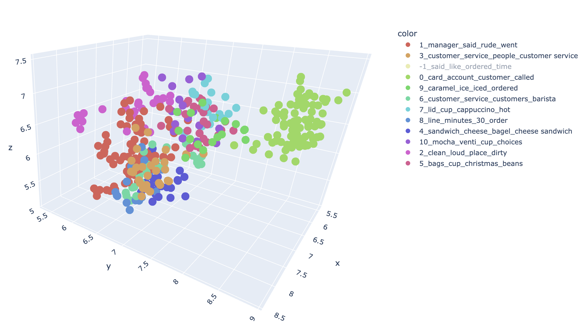

Kate Stadelman's Personal Microsite
About

Areas of Expertise: AI/ML, Data Engineering, & Analytics
As Chief Analytics Officer & Distinguished Engineer at HealthRate, I lead the development of innovative technology that brings clarity to some of healthcare’s most complex and costly claims. Our work earned Best in Show at HIMSS25's Emerge Innovation Experience Contest in the Payer category for advancing data and analytics capabilities. With over 15 years of experience in AI/ML, data engineering, and analytics, I've worked across the healthcare ecosystem to deliver data-driven solutions that create real business value.
My journey into data started with curiosity. In third grade, I could not understand how the wheels on our Toyota minivan turned on their own, so I wrote a report on combustion engines. That curiosity evolved into a career focused on understanding how things work, and more importantly, how to make them work better through data and technology.
Over the years, I have led initiatives ranging from ACA and ICD-10 implementations to building a next-generation IT configuration management data warehouse for the largest healthcare company in the world. My recent work focuses on advancing Natural Language Processing (NLP) and Generative AI, including conversational agents using Retrieval-Augmented Generation (RAG), an LLM-powered provider contract ingestion engine, and long document summarization tools.
I welcome connections to collaborate, share ideas, or discuss opportunities in data-driven innovation.
Experience
HealthRate
Chief Analytics Officer & Distinguished Engineer, Sep 2024 - Present
- Developed a cloud SaaS statistical platform that uses Monte Carlo simulations to compare healthcare specialty networks, optimizing high-cost claim scenarios.
- Won Best in Show at HIMSS25's Emerge Innovation Experience Contest in the Payer category for advancing data and analytics capabilities.
- Built an LLM-powered provider contract ingestion engine, processing thousands of contracts into a proprietary data model.
- Engineered a multi-tenant data warehouse and data management platform, enhancing scalability and data integrity.
- Automated CI/CD release pipeline with comprehensive regression testing, ensuring secure tenant configuration.
Optum
Distinguished Engineer, May 2023 - Sep 2024
- Built a next-generation enterprise IT configuration management data warehouse – sourcing event streams, APIs, and database systems – increasing entities tracked from 350K to 16M in 18 months.
- Enhanced data architecture to maintain full record history and lineage with refreshes every five minutes for volatile sources and nightly data validations with 100% coverage.
- Developed a ServiceNow ITSM conversational agent to reduce recovery time during IT outages using a Retrieval-Augmented Generation (RAG) framework with custom data indexes and retriever for prompts referencing enterprise-specific identifiers.
Senior Principal Engineer, Aug 2020 - May 2023
- Topic modeling (NLP) of IT incident and problem records, providing insight into operational pain points and automation opportunities.
- Graph analysis of network traffic for implementation of micro-segmentation.
- Engineered an automated quality assurance BI solution that delivered critical insights into data integrity for a newly implemented infrastructure asset inventory system, playing a key role in driving a strategic shift.
- Administration of Azure CosmosDB for MongoDB.
- Mentor for Women in Analytics & Data Science and Optum Tech University.
Medica
Director Business Intelligence, Nov 2019 - Aug 2020
- Developed a multi-year data and analytics strategy with roadmaps for core data standardization, data architecture, data governance, and BI technologies.
- Implemented Agile Scrum and resource capacity planning, increasing team cohesion and transparency for business stakeholders.
- Led a cross-departmental data analyst workgroup, hosting monthly events with speakers and exercises to strengthen and expand the data analyst community.
Finance Manager, May 2018 - Nov 2019
- Standardized and automated physician reimbursement processes, achieving a 26% increase in team productivity over 18 months.
- Designed and taught bi-weekly SQL classes for healthcare analyst team members.
Provider Measurement Analyst Lead, Nov 2017 - May 2018
- Developed scalable, automated analytical reporting suites for measuring Individual & Family Business Accountable Care Organization product performance and facilitating population health management.
Rocky Mountain Health Plans
Senior Manager Data Services, Jan 2016 - Nov 2017
- Reported to Chief Information Officer, managing the architecture, development, and quality of data warehousing and business intelligence functions.
- Collaborated with business, development, and system infrastructure to improve business processes and build innovative and scalable analytic tools.
- Exchanged and integrated enrollment, provider, claims, prior authorization, and other healthcare data from disparate sources.
- Established and led an enterprise data governance program.
Manager Member Benefit Configuration & Business Analysis, May 2014 - Jan 2016
- Architected and drove benefit configuration implementation for ICD-10 conversion.
- Collaborated with Sales & Marketing management to design benefit packages that could be implemented smoothly and systematically, including specialized pilot programs.
- Managed the configuration and QA of member benefit plans, member accumulators, prior authorizations, and medical code sets (CPT/HCPCS/ICD-9/ICD-10) and mappings.
Senior Health Care Economic Analyst, Feb 2013 - May 2014
- Provided guidance, analysis, and solutions for ACA Risk Adjustment and Cost-Share Reduction Reconciliation.
- Produced analysis on provider network, member enrollment, and claims and encounter data, including reports for Medicaid ASO Payment Reconciliation.
- Developed models to determine revenue impacts of provider contract proposals and compare market standard provider reimbursement methodologies.
Validation & Testing Analyst, Apr 2012 - Feb 2013
- Designed and automated test plans for medical and drug products, provider contracts, and provider fee schedules, making system validations more thorough, accurate, and efficient.
Contract Configuration Analyst, Feb 2011 - Apr 2012
- Built research tools to gather and analyze system data, including claims, provider records, provider agreements, fee schedules, member records, and medical products.
- Configured provider contracts and fee schedules using NetworX and Facets.
Colorado Mesa University
Research, 2003 - 2006
- Department of Business: Developed and maintained database of key Mesa County and City of Grand Junction economic indicators and produced quarterly newsletter.
- Department of Biology: Developed algorithm to determine the sample period necessary to detect significant spatial structure in butterfly communities with ecological indices.
- Department of Mathematics: Analyzed limitations of first-order language using Ehrenfeucht-Fraissé Games.
Education
MS in Data Science, University of Denver, 2022
- 4.0 GPA
- Student Ambassador
BS in Mathematics, Colorado Mesa University, 2006
- 4.0 GPA, Summa Cum Laude
- Major Field Test for Mathematics, Top 10% Nationally
- Outstanding Math Graduate, 2006
- National Merit Scholar, 2002
Sample Projects
Topic Modeling: Latent Dirichlet Allocation (LDA) vs. BERTopic

Topic modeling is a Natural Language Processing (NLP) technique for discovering topics in a collection of documents, allowing you to see hidden structure in your text data. Latent Dirichlet Allocation (LDA), which was first presented in 2003 by David Blei, Andrew Ng and Michael I. Jordan, long reigned as the premier topic modeling method. However, BERTopic by Maarten Grootendorst burst on the scene in 2022, leveraging recent advancements in large language models. In this sample project, we will focus less on the mathematics behind these methods and more on practical differences between LDA and BERTopic and the basics of how to make topic models.
Anomaly Detection in Host Log Files

Anomaly Detection in Host Log Files GitHub Repo
In today’s digital age, cybersecurity has become a primary concern for business. While threats come in many forms, compromised credentials continue to be a main cause of costly breaches. It is essential that harmful user activity is identified and dealt with as quickly as possible, and this has become a fundamental capability of many cyber protection solutions. In this paper, we research whether we can identify anomalous user activity in massive computer (host) log files. Using Isolation Forest, we show that not only can we identify potentially compromised users, but we can do so with highly irregular and limited training data.
Fetal Cardiotocograph (CTG) Classification
Fetal Cardiotocograph (CTG) Classification GitHub Repo
Used during pregnancy to monitor fetal heart rate and uterine contractions, cardiotocography (CTG) tests allow early detection of fetal distress. Typically, CTGs are manually reviewed by obstetricians and midwives. One criticism of this diagnostic tool is the tendency for the same CTG to receive different interpretations depending on the reviewer (high inter-observer variability rate). An automated, reliable method for reading CTGs would empower expectant mothers with the knowledge they need while also reducing burden on their clinical teams.
The purpose of this research project is to leverage machine learning to interpret CTGs. We explore feature extraction methods and classification algorithms in pursuit of our research question: How do Random Forest, Logistic Regression, and K-Nearest Neighbors compare in predicting normal vs. abnormal CTG results given test metrics?
Network Traffic Botnet Classification
Network Traffic Botnet Classification GitHub Repo
A Distributed Denial-of-Service (DDoS) attack may render a business’ digital services unusable, costing millions. Harmful network traffic must be identified and blocked as quickly as possible, without disrupting normal network traffic. This is a fundamental capability of many cyber protection solutions, and in this project, we utilize Random Forest to distinguish harmful botnet traffic from normal network traffic.
Data Science Charchuterie
Photo by Anto Meneghini on Unsplash
Data Science Charchuterie GitHub Repo
Explore flavors of data science flavors wite me, including classic algorithms and techniques for clustering, regression, and classification! This repo is intended for data science beginners who would like a few data mining examples to get started.